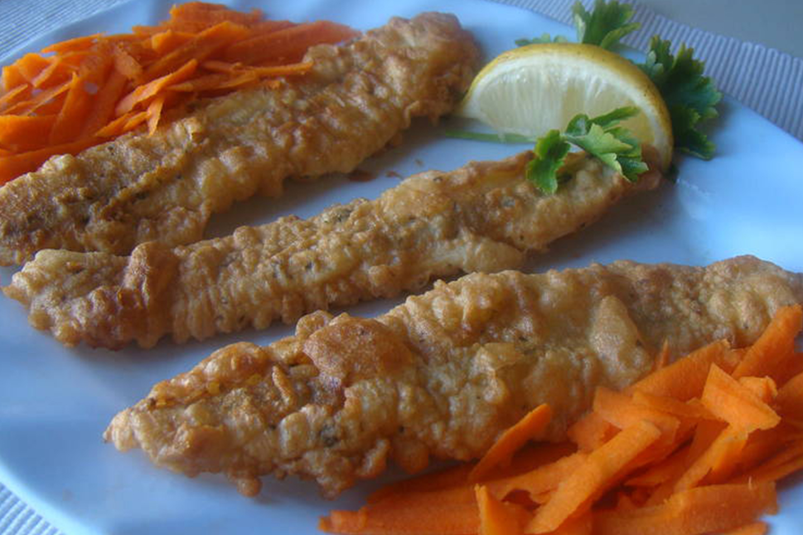

El lago Poopo es el segundo más grande de Bolivia después del Titicaca y está en el departamento de Oruro, a 92 km al sur de la capital departamental.
Tras recuperar su nivel de agua luego de secarse a finales de 2015, se sembraron 100 mil alevines de pejerrey, lo que ha permitido dar trabajo y asegurar la subsistencia de 14 cooperativas de pescadores.
En Oruro no se come mucho pescado por su localización, por lo que las recetas con pejerrey constituyen manjares ocasionales acompañados de papas cocidas y arroz.
Una de las preparaciones preferidas es el pejerrey frito después de ser rebosado en una mezcla de huevos, polvo de hornear, leche, sal y pimienta. Se salsea con un típico ahogado orureño.
El pejerrey rebozado es un platillo se origen orureño además de ser una comida típica de esta cuidad, el pejerey rebozado es un plato muy disfrutado por los turistas que visitan esta cuidad.
El pescado pejerrey del lago Uru Uru es una fuente importante de abastecimiento para su consumo en la region altiplanica
|  | Pejerrey |